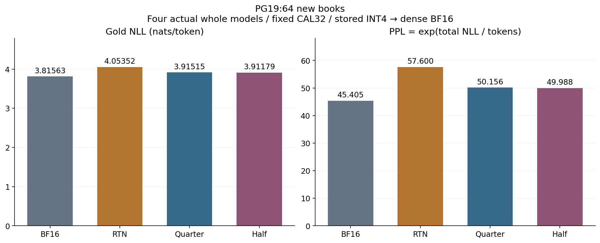
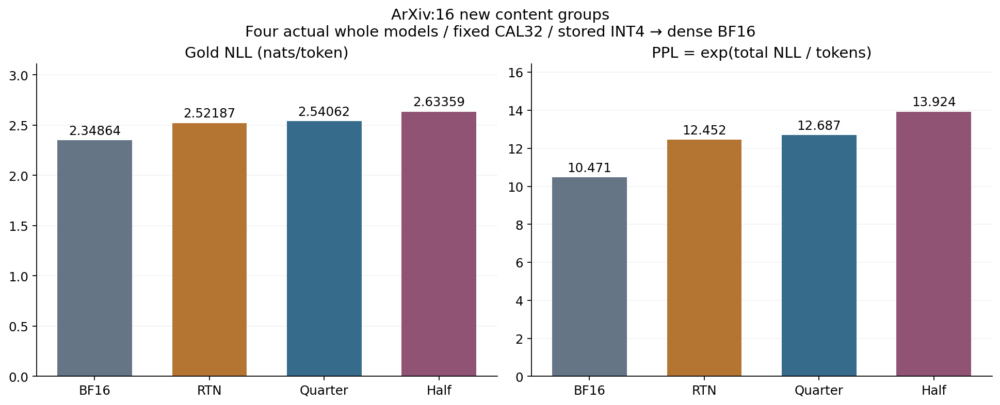

Case014 P2 · Qwen3-0.6B · COMPLETED_P2_CORE
같은247,733,136B projection core에서 PG19 이득을 관측했습니다. ArXiv는 QUARTER 불확정·악화 점추정, HALF 악화입니다.
PG19 improves at identical core bytes; SHIFT limits transfer. Stored INT4 → dense BF16 quality reference.
| Method | Cohort | NLL ↓ | PPL ↓ | ΔNLL vs RTN |
|---|---|---|---|---|
| BF16 | PG19 (n=64) | 3.815629 | 45.405 | -0.237892 |
| RTN | PG19 (n=64) | 4.053521 | 57.600 | +0.000000 |
| QUARTER (0.25) | PG19 (n=64) | 3.915147 | 50.156 | -0.138374 |
| HALF (0.5) | PG19 (n=64) | 3.911792 | 49.988 | -0.141730 |
| BF16 | ArXiv (n=16) | 2.348638 | 10.471 | -0.173230 |
| RTN | ArXiv (n=16) | 2.521869 | 12.452 | +0.000000 |
| QUARTER (0.25) | ArXiv (n=16) | 2.540615 | 12.687 | +0.018747 |
| HALF (0.5) | ArXiv (n=16) | 2.633587 | 13.924 | +0.111718 |
문서별255 valid tokens, full-vocab KL16 positions. Primary: PG19 QUARTER−RTN. No serving latency or packed-kernel speed measurement.

